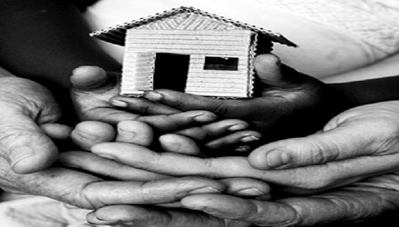

We Care About Giving
Whom We Help
Amcha Ghar accepts orphaned, semi-orphaned, neglected and abandoned girls. We work with rejected children, orphans who do not know their origin, children of commercial sex workers, children abused by their relatives, children who have witnessed the suicide of family members, and children deserted due to poverty and hardship. Some girls’ parents have contracted HIV/AIDS and are unable to care for them, although the girls themselves do not have HIV.
Some were sold to brothels in other states, expected to suffer the pain in silence; others resorted to glue-sniffing to escape daily physical and emotional duress. These children are often found in unhygienic conditions on streets and beaches, or in parks, parking lots, or slums.
Girls generally come to Amcha Ghar after five years of age, although exceptions are made for emergencies. We provide a safe, loving environment to support their growth until they have completed their education and/or vocational training and can provide for themselves as successful adult women.
Community Support
Amcha Ghar actively works with a broad range of NGO’s and institutions on a local, national, and International level. We receive referrals of residents from CWC (child welfare committee). In addition, we work through a variety of media channels and national/international forums to raise awareness of the problems faced by vulnerable female children.
On a local Uttan community level, there are 800 students currently enrolled in Amcha Ghar School of which most are children from fisher folk families.
-
Well supported by
- Ankur
- Mahesh Tutorial
- Child Help Foundation
- Association Kamathipura
- Support Didi Project
- Garwar house
- The Bridge charitable trust
- Other individual well-wishers.

Providing Sanctuary

For the majority of street children, street life seems to them to be their only means of survival. As girls, they are exposed to pimps, violence, sexual abuse and communities that despise them through lack of understanding of their experiences and reasons for coming to the streets.
Rescuing children from the dangerous environment of the streets and offering them access to a safe environment is only the first step on the long road to recovery, but it is nonetheless a crucial one.
Through our dedicated team of field social workers and well wishers, including the Mumbai police, we offer children wishing to make a break from street life the opportunity to do so. At the ‘Home’, the staff undertakes the identification and rehabilitation process of each child in order to understand and address their individual needs.
We offer family counseling and parental job placement assistance, with the ultimate aim of strengthening the families so that girls can be reunited with their parents.
We Care About Giving
Daily Activities
-
The Main Activities at Amcha Ghar Are
- Nursery to Senior kindergarten.: get up at 7am, breakfast, classes at Amcha Ghar School from 8:30-11:30am, lunch, nap, tuition from 3-5 pm<,li>
- 1st to 4th Standard: get up at 7am, breakfast, tuition from 9-11am, lunch, classes at Amcha Ghar School from 12:30-5:30pm
- 5th to 10th Standard: get up at 5am, breakfast, classes at Amcha Ghar School from 7-1pm, lunch and rest, tuition from 3-5 pm
- Group evening routine: tuition from 6:30-8:30pm, evening prayers, dinner, and night prayers. Thereafter children may finish studying or go directly to bed by 10.30pm.
• Structured daily routine for children:
- Nutritious meals, including daily breakfast, lunch, evening snacks, and dinner.
- Hygienic washing facilities for the children and their clothing.
- Formal English Medium School.
- On-site skills training in computer technology, sewing, music, etc.
- Skills training placements in the community with local tradesmen.
- Life skills lessons on HIV/AIDS, first aid, relationships, personality development.
- Group and individual counseling.
- Sports and other recreational activities.
- Birthday celebrations: all the girls make a card for the birthday girl and sing for her before having cake. Each girl is given a new dress on her birthday. For those children who do not have living parents or relatives, a trustee brings cake and a dress.
- Celebration of all feasts.
- Monthly medical check-up and monitoring of height, weight and BMI.
- Beyond meeting the children’s physical needs, we aim to stimulate their desire to learn and help them find a Home “without walls.”
Future Plans
>Amcha Ghar School
The local community is very happy with our school. We offer classes up to 10th standard with professional teachers. As our standards increase, so does our number of students. It is becoming more difficult everyday to house our students. Our school goals for near future.
- Find funding to construct a new classrooms & development
- Implement school bus service
- Start scholarship programme to fund college tuition for pupils who graduate 10th standard.
If we can reach these goals, we can offer near-free/subsidies education to over a thousand students!
Amcha Ghar Home
- Find patrons for scholarships for college education of the girls.
- Purchase land for development & expansion of our Home.
- Sponsorship for higher education.
- Our own premises for 18+ girls.
Computer Classes
In today’s world having sound knowledge of computers and different computer software courses has become increasingly important. If you are looking for success and growth in your career, having proper computer training is a must.
Starting up from the very basics and gradually building to advanced levels. our computer training courses are designed in such a way that learning becomes fun and simple. Our computer software modules are designed to help work your way through all the exercises and examples and gain enough proficiency in your chosen computer course.
 Completed a course on MS office and MS Excel on our 2 day Computer class event
Completed a course on MS office and MS Excel on our 2 day Computer class event